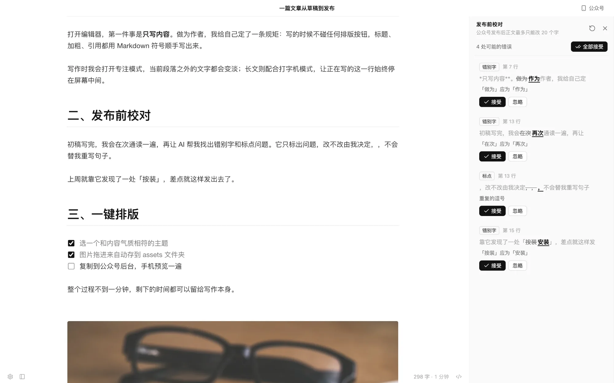
发布前校对
只挑确定的错误，不改写你的文风。每一处都由你决定。
- 错别字、语病、标点、重复用词
- 逐条定位、接受、忽略；全部接受后一次 ⌘Z 还原
- 代码块、链接、Front Matter 不会被改动
- 中英文空格是可选的风格建议，默认不报
写作体验
输入 Markdown，立刻看到排好的样子。标记只在光标所在处出现，其余时间界面里只有你的文字。
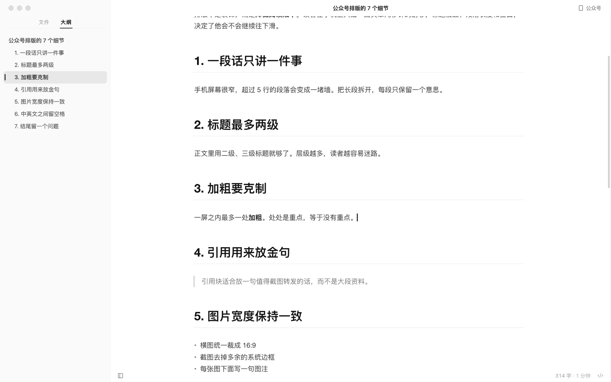
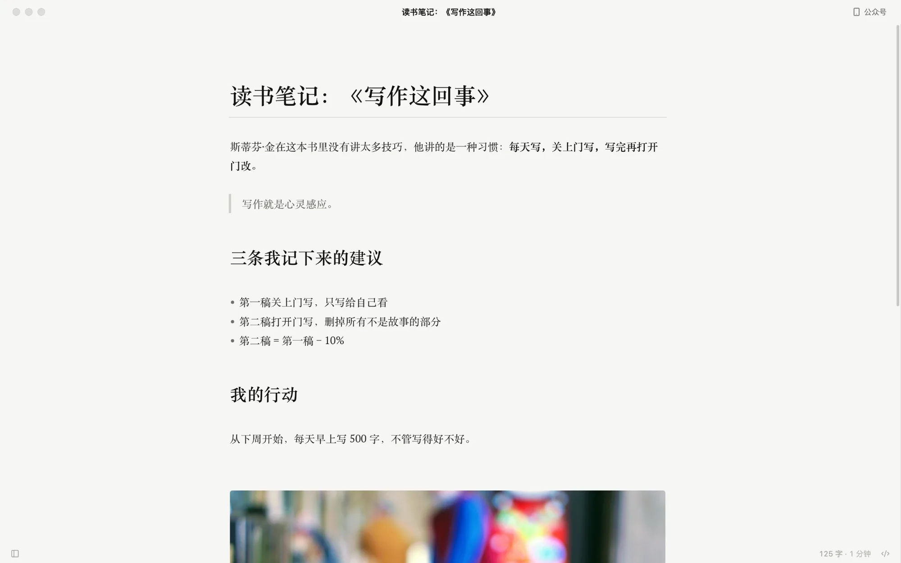
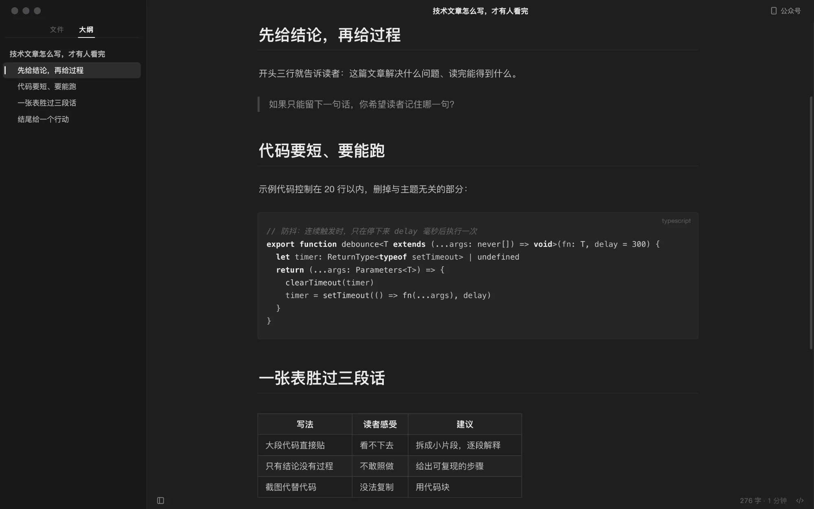
三套编辑器主题，可跟随系统深色模式
基于 CodeMirror 6，标题、加粗、图片、表格、Mermaid 随写随现。
打开、不改、关闭，文件逐字节不变。换行符、缩进、表格对齐都不会被重排。
F8 只留当前段落，F9 让正在写的那一行停在窗口中央。
⇧⌘L 打开侧边栏，在文件树和大纲之间切换，点标题即跳转。
⌘P 找文章，⇧⌘P 找命令。⌘/ 随时切回源代码。
粘贴或拖入的图片存进文档旁的 assets/，写相对路径；也可以上传图床。
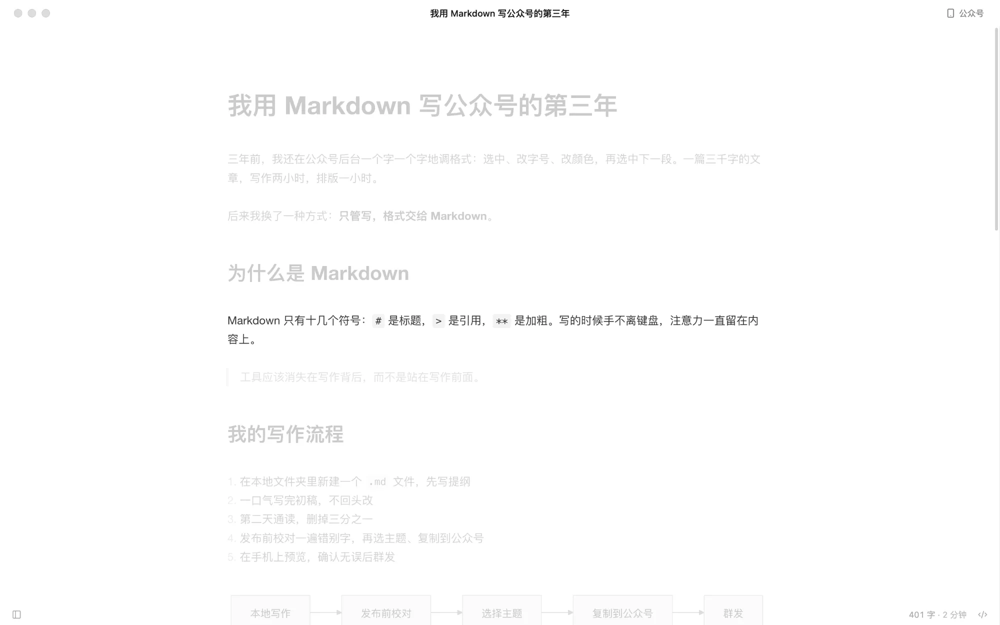
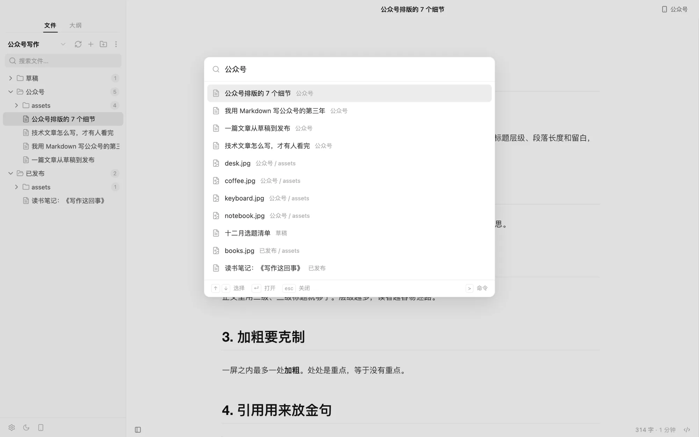
编辑区 · v0.3.0
没有常驻工具栏。选中文字，浮动格式条出现；停在空行，左边有个「+」；右键是熟悉的原生菜单。它们执行的都是菜单里的同一条命令，都能撤销。
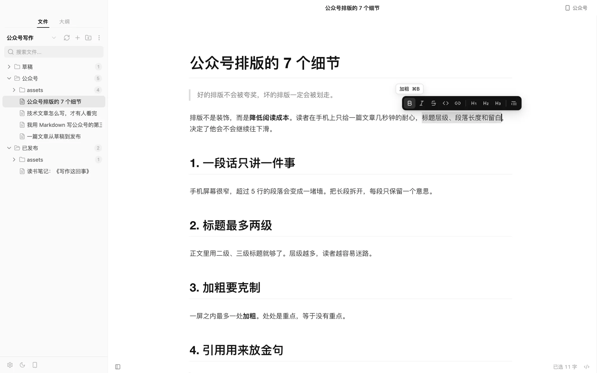
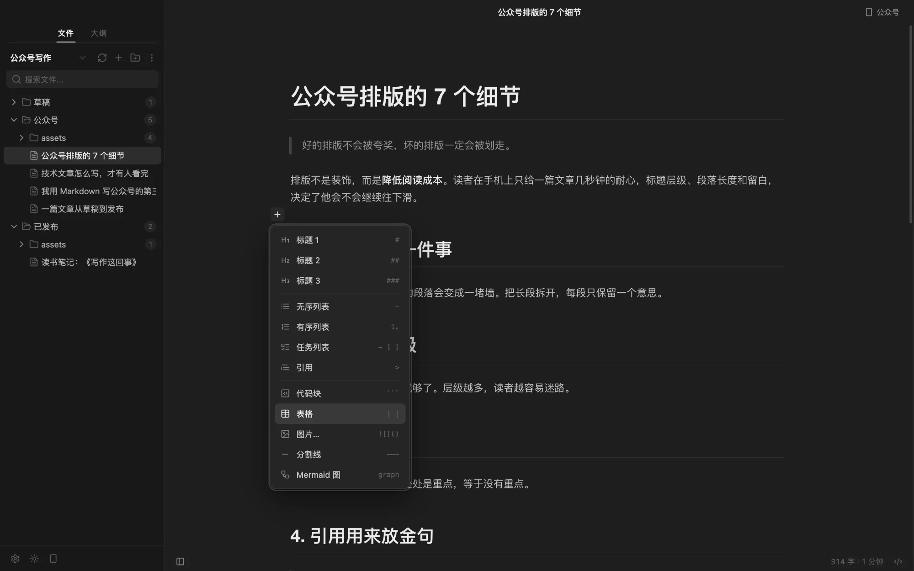
加粗、斜体、删除线、行内代码、链接、标题 1–3、引用。已有的格式会高亮，悬停显示快捷键。
插入标题、列表、引用、代码块、表格、图片、分割线、Mermaid 图，方向键加回车就行。
右键有段落、格式、插入和发布前校对；设置、浅色 / 深色、公众号预览放在侧边栏左下角。
公众号排版
按 ⌥⌘P 打开公众号预览，选一套主题，点「复制到公众号」，到后台粘贴。不用再一段一段调格式。
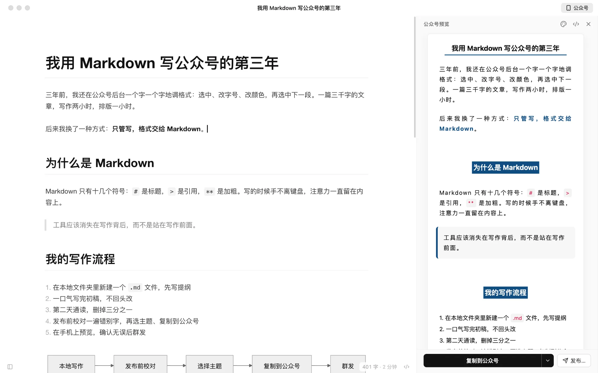
预览面板按公众号的实际效果渲染，复制时样式已内联，粘贴后不走样。
经典、优雅、简洁三套文章主题，可调字体、字号、主题色和代码块样式。
公众号读不到本地图片。复制前 Slothdown 会告诉你哪些图片需要在后台重新上传。
导出与打开方式 · v0.3.0
同一篇稿子，导出 PDF 发给编辑，导出 Word 交给要改稿的人。在访达里右键 .md，就能用 Slothdown 打开。
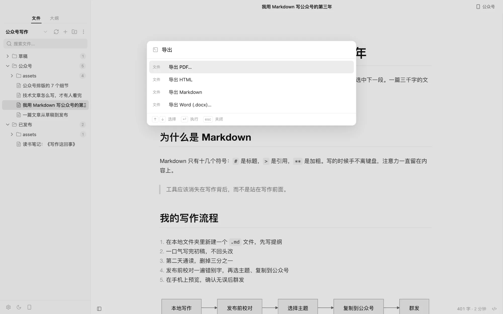
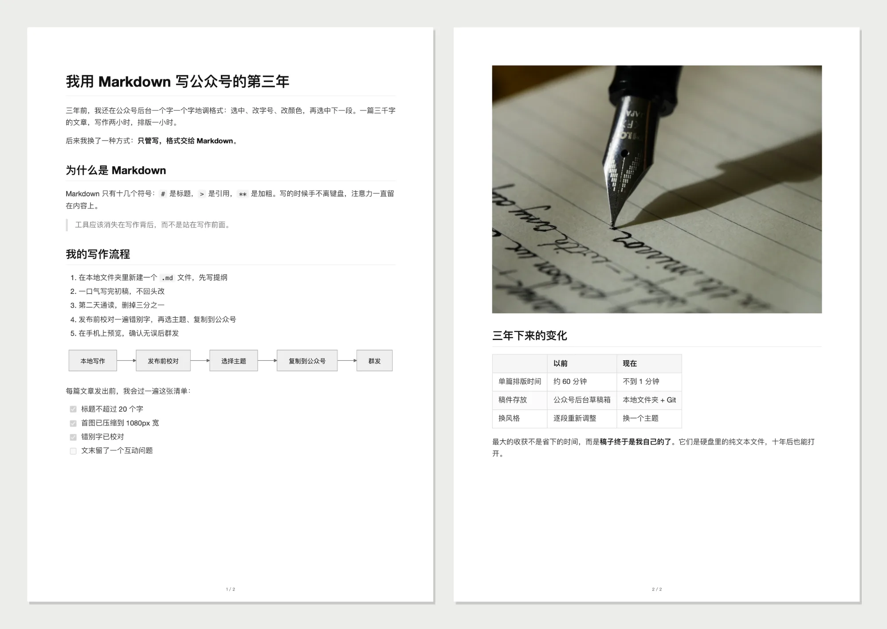
按编辑器主题排版，A4、页脚页码；代码高亮、表格、本地图片、Mermaid 都在，标题不落在页尾。
标题样式、列表、引用、代码块、表格原样保留，图片嵌入并按页宽缩放，中文用宋体 / 黑体。
登记为 .md 的「打开方式」，不抢默认应用。不在工作区里的文件，会连同所在文件夹一起打开。
两个 AI 帮手
公众号文章发布后，正文最多只能改 20 个字。所以 Slothdown 的 AI 只做两件事，都在你点「发布」之前。

只挑确定的错误，不改写你的文风。每一处都由你决定。
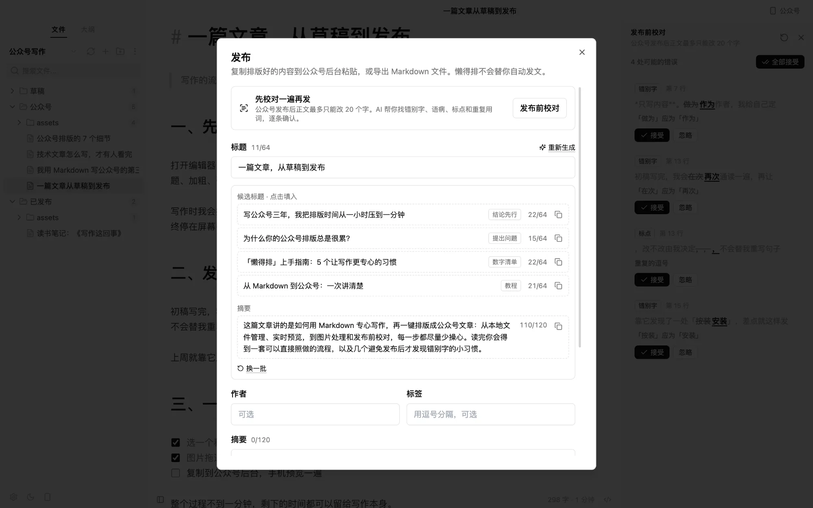
在发布对话框里，根据全文拟好候选，挑一个就行。
在偏好设置里填入你自己的 API Key，请求从你的电脑直接发到你选择的服务商。Slothdown 没有服务器，Key 只保存在本机。
只有你点击「校对」或「拟标题」时，文章才会被发送。
快捷键
菜单、快捷键和命令面板共用同一张命令表，看到的就是能用的。
Windows / Linux 上 ⌘ 是 Ctrl，⌥ 是 Alt。完整快捷键列表
常见问题
Slothdown 是 Markdown 加一只树懒，也是 slow down——慢下来，专心写；标语「懒得排版？交给树懒。」说的就是它。v0.3.1 起只用 Slothdown 这一个名字，不再有中文名。它就是原来的 LazyBox，v0.3.0 起改名。老用户直接安装新版：第一次启动时偏好设置、AI 配置和工作区列表会自动带过来，旧数据原样保留。
没有关系。Slothdown 是独立的开源项目，只是写作体验以 Typora 为参照。它多做的是公众号排版和发布前校对；如果你不写公众号，Typora 依然是很好的选择。
免费、开源（MIT），不需要注册。AI 功能使用你自己的 API Key，费用由你的服务商按用量计算；不用 AI 也能完整使用写作和排版。
macOS（Apple 芯片与 Intel）是主要开发和测试平台。Windows 与 Linux 安装包随版本自动构建（Slothdown-<版本>-…），实机测试较少，欢迎反馈问题。
安装包暂未签名。把应用拖进「应用程序」后，在终端执行 xattr -cr /Applications/Slothdown.app 即可。
公众号后台读不到你电脑上的图片。Slothdown 会在复制前提醒你，到后台重新上传这些图片即可；也可以在设置里配置图床（GitHub、阿里云 OSS、腾讯云 COS、七牛云、Cloudflare R2 等），之后粘贴的图片会直接上传。
表格以 Markdown 源码编辑、数学公式和 HTML 块不渲染、网页富文本按纯文本粘贴、公众号预览单向滚动同步。这些都在路线图上。